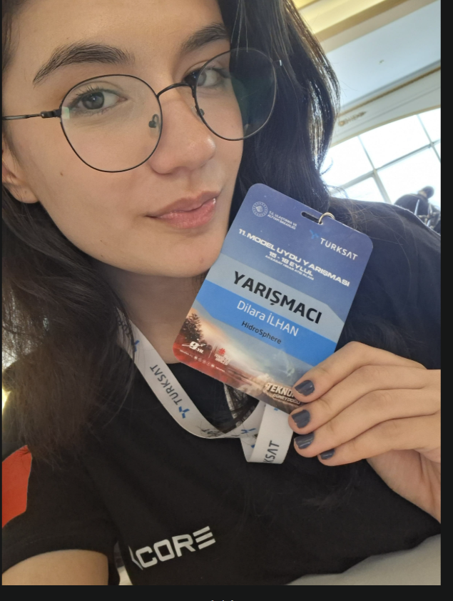
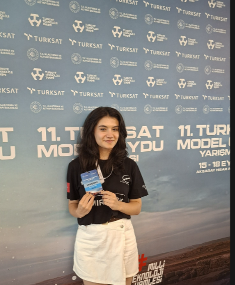
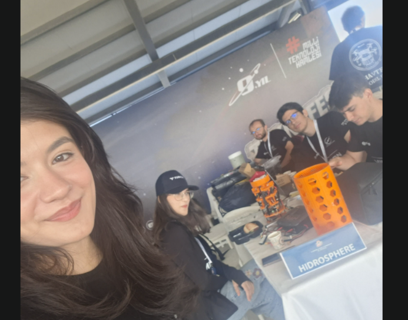
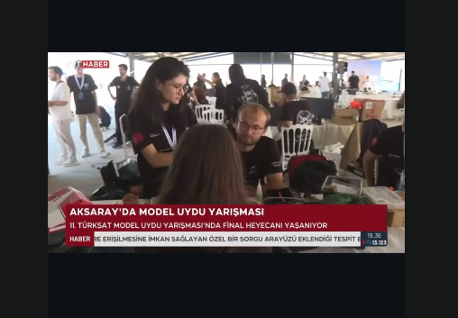
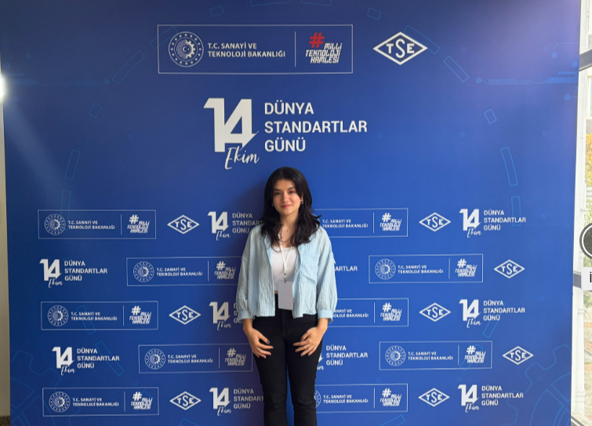

Yarışmalar, arkadaşlar, ekip çalışması ve unutamadığım anlar... Fotoğraflarımı bu sayfada topladım.
11. TÜRKSAT Model Uydu Yarışması'na Hidrosphere takımıyla katıldım. Bir projeyi yarışma ortamına taşımanın nasıl bir deneyim olduğunu gördüm.

Takım arkadaşlarımla hazırlık ve yarışma sürecini yaşamak, teknik çalışmalar kadar iletişimin de önemli olduğunu gösterdi.


Model uydu yarışmasındaki görüntüler bir televizyon haberine de yansıdı.

CORE topluluğunun çalışmaları kapsamında Dünya Standartlar Günü etkinliğine katılmak benim için ayrı bir deneyimdi.

Model uydunun teknik ve yarışma günlüğüne geç
SpaceLog | Uzay, teknoloji ve mühendislik yolculuğum